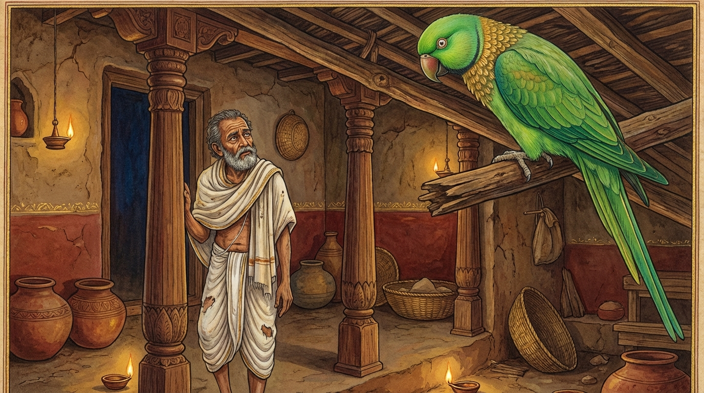

8. රාධ ජාතකය (198)
“පවාසා ආගතො තාතා” (දරුව, විදේහයෙන් පැමිණියෙමි) යන මේ දේශනාව බුදුරජාණන් වහන්සේ ජේතවනාරාමයෙහි වැඩවාසය කරන සමයෙහි සසුන ගැන කලකිරුණු භික්ෂූන් වහන්සේ නමක් අරබයා වදාළ සේක. ශාස්තෲන් වහන්සේ විසින්, “මහණ! ඔබ සැබවින්ම කලකිරුණෙහිද?” යි විමසන ලද්දේ, “එසේය ස්වාමීනි” යි පැවසූ විට, “කුමන කාරණාවක් නිසාදැයි” වදාළ කල්හි, “එක් සරසන ලද ස්ත්රියක් දැක ඇය කෙරෙහි කෙලෙස් වසඟයට පත්වීම නිසාය” යි ඔහු පැවසුවේය. ඉක්බිති ඔහුට බුදුරජාණන් වහන්සේ වදාළේ, “මහණ! ස්ත්රිය නම් ආරක්ෂා කිරීමට අපහසුය. පෙර දොරටුපාලයන් යොදා රක්නා ලද්දේ නමුදු (ඔවුන්) රැකගැනීමට නොහැකි විය. ඔබට ස්ත්රියගෙන් කුමන ප්රයෝජනයක්ද? ලැබුණත් ඇය රකින්නට නොහැකිය” යි වදාරා අතීත කථාව ගෙනහැර දැක්වූ සේක.
පෙර බරණැස් නුවර බ්රහ්මදත්ත රජු රාජ්යය කරන කල්හි අප මහා බෝසතාණන් වහන්සේ ගිරා යෝනියේ උපන් සේක. ඒ ගිරවාගේ නම ‘රාධ’ ය. මොහුගේ කණිටු සහෝදරයාගේ නම ‘පොට්ඨපාද’ ය. මේ සතුන් දෙදෙනා තරුණ කාලයේදීම එක් වැද්දෙක් අල්ලා ගෙනවුත් බරණැස් නුවර එක්තරා බමුණෙකුට දුන්නේය. බමුණා ඔවුන් දරු තනතුරෙහි තබා පෝෂණය කළේය. එහෙත් බමුණාගේ බැමිණිය ආරක්ෂා කිරීමට අපහසු දුසිල් තැනැත්තියකි. ඔහු වෙළඳාම් කටයුතු සඳහා පිටත්ව යනවිට ඒ ගිරා පෝතකයන් අමතා, “දරුවනි! මම වෙළඳාම පිණිස යමි. කාලයේ හෝ අකාලයේ හෝ තොපගේ මව කරන ක්රියාවන් පරීක්ෂා කර බලව්. අන් පුරුෂයන් කරා යන බව හෝ නොයන බව දැනගනිව්” යි කියා බැමිණිය ගිරා පෝතකයන්ට පවරා දී ගියේය. ඈ බමුණා පිටත් වූ තැන් පටන් අනාචාරයේ හැසුරුණාය. රෑ දාවල් යන එන පුරුෂයන්ගේ ප්රමාණයක් නැත.
ඒ දැක පොට්ඨපාද තෙම රාධගෙන් විචාළේය. “බමුණා මේ බැමිණිය අපට පවරා දී ගියේය. ඇයද පාප ක්රියා කරන්නීය. ඇයට ඒ ගැන කියමියි” කී විට රාධ, “නොකියන්න” යි කීවේය. පොට්ඨපාද තෙම රාධගේ බස නොසලකා, “මෑණියනි! කුමක් නිසා පව්කම් කරන්නීදැයි” කීවේය. බැමිණිය ඒ ගිරවා මරනු කැමතිව, “දරුව! ඔබ මගේ පුතාය. මෙතැන් පටන් ඒ පව්කාර ක්රියා නොකරන්නෙමි. එව දරුව” යි ප්රියමනාප විලාසයෙන් ළඟට කැඳවා, ආ විට අල්ලාගෙන, “නුඹ මට අවවාද දෙන්නෙහිද? තමන්ගේ ප්රමාණය නොදන්නෙහිය” යි කියා බෙල්ල කරකවා මරා ලිප තුළට දැම්මාය. බමුණා පැමිණ විඩා හැර බෝසතුන් අමතා, “දරුව, රාධ! කිම තොපගේ මව අනාචාරයේ හැසුරුණාද නැද්ද?” යි විමසමින් මෙම පළමු ගාථාව පැවසුවේය.

“දරුව! විදේහයෙන් පැමිණියෙමි. (මා පැමිණ) බොහෝ කල් නොවෙමි. දරුව! කෙසේද, තොපගේ මව අන් පුරුෂයකු ඇසුරු කළේද?”
මෙහි අර්ථය නම්: “දරුව රාධ! මම විදේහයේ සිට පැමිණියෙමි. මා පැමිණියේ දැන්මය, වැඩි වේලාවක් නොවේ. එබැවින් මම තොරතුරු නොදන්නා හෙයින් ඔබගෙන් විමසමි: දරුව, ඔබේ මව අන් පුරුෂයකු සේවනය කළා ද?” යන්නයි.
බෝසත් රාධ තෙම, “පියාණනි! නුවණ ඇති අය සිදුවූ හෝ සිදු නොවූ හෝ සසර රඳවන (විපත් ගෙන දෙන) දේ නොකියති” යි දන්වමින් දෙවන ගාථාව කීවේය.
“සත්යයෙන් යුක්ත වූවත්, යම් වචනයක් කීමෙන් විපතක් වේ නම්, එය ඇති සැටියෙන් කිවයුතු නොවේ. (එසේ කියන්නා) ගිනි මුසු අළුයෙහි දමා තැම්බූ පොට්ඨපාදයා මෙන් හෝනේමයි.”
එහි ‘ගිරං’ යනු වචනයයි. දැන් ‘වචනය’ යනුවෙන් කියන්නා සේ එකල වචනයට ‘ගිරං’ යනුවෙන් කියනු ලැබීය. ඒ ගිරා පෝතකයා ලිංග භේදය (ව්යාකරණ) නොසලකා මෙසේ කීවේය. මෙහි අර්ථය මෙයයි: “දරුව! නුවණ ඇත්තා විසින් ‘සච්චූප සංහිතං’ (සිදුවූ පරිදි, සත්යයෙන් යුක්ත) ස්වභාව වචනය වුවද, එය විපත පිණිස පවතී නම් ‘න සුභණං’ (නොකිය යුතුයි). විපත පිණිස පවතින ඇත්ත වුවද කියන පුද්ගලයා, ‘සයෙථ පොට්ඨපාදොව මුම්මුරෙ උපකූථිතො’ (යම් සේ පොට්ඨපාද උණු අලුවල පිළිස්සී නිදයිද), එසේම නිදන්නේය.” ‘උපකූජිතො’ යනුද පාඨයකි; එහි අර්ථයද මෙයමයි.
මෙසේ බෝසතාණන් වහන්සේ බමුණාට ධර්මය දේශනා කොට, “අපටද මෙහි විසීමට නොහැකිය” යි කියා බමුණාගෙන් විමසා වනයටම පිවිසියේය.
බුදුරජාණන් වහන්සේ මේ ධර්ම දේශනාව ගෙනහැර දක්වා චතුරාර්ය සත්යය දේශනා කොට ජාතක කථාව නිමවා වදාළ සේක. සත්ය දේශනාව අවසානයෙහි කලකිරුණු භික්ෂුව සෝවාන් ඵලයෙහි පිහිටියේය. “එකල පොට්ඨපාද ගිරවා වූයේ ආනන්ද ස්ථවිරයන් ය. රාධ වනාහි මම ම වූවෙමි” යි වදාළ සේක.
අටවන වූ රාධ ජාතක වර්ණනාවයි.